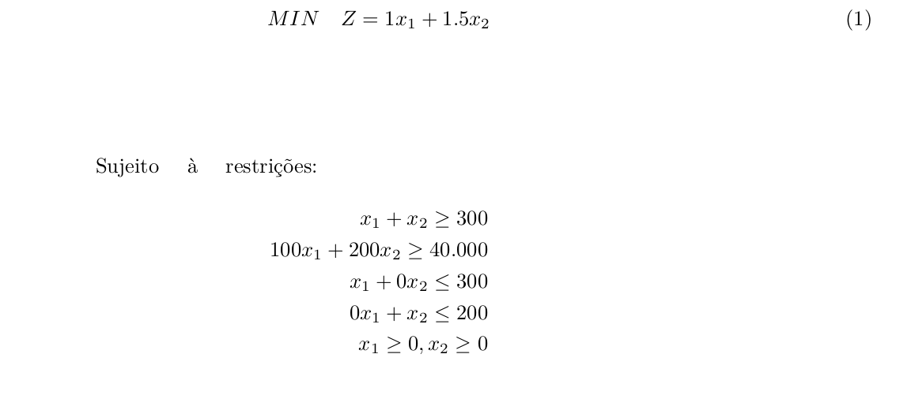

Esse caderno contém um exemplo de solução de um problema de programação linear pelo método gráfico. O Problema utilizado como exemplo foi apresentado na disciplina PCF508 (Pesquisa operacional para fins florestais).
Em fábrica de pasta celulósica localizada em uma pequena cidade… (adaptado de Buongiorno e Gilles):
| Preço de venda | Poulição | Mão de obra | Capacidade instalada | |
|---|---|---|---|---|
| Unidades | [R$/t] | [dbo/t] | [homem-dia/t] | [t/dia] |
| Pasta química | 100 | 1 | 1 | 300 |
| Pasta mecânica | 200 | 1.5 | 1 | 200 |
Sendo a cooperativa uma empresa com responsabilidade social, os diretores desejam manter pelo menos 300 empregados. Além disso, devido a questões financeiras, é necessária a geração de uma receita bruta diária de pelo menos R$ 40.000,00 para honrar os compromissos assumidos com a instituição que financiou a compra da fábrica. Os diretores desejam determinar os níveis diários de produção de cada tipo de pasta celulósica, atendendo às questões ambientais, ou seja, minimizando a poluição.
Modelo conceitual:
Modelo (forma canônica):
Método Gráfico
O primeiro passo para traçar as linhas correspondentes a cada restrição é transformá-las em igualdades:
Plot das equações
cons.1 = function(x) 300 - x
cons.2 = function(x) 200 - 0.5*x
library(ggplot2)
p <- ggplot(data = data.frame(x = 0), aes(x = x)) +
geom_vline(xintercept = 0) +
geom_hline(yintercept = 0) +
stat_function( fun = cons.1, geom="line", aes(col = 'y=300-x')) +
stat_function( fun = cons.2,geom="line", aes(col= 'y= 200 - 0.5x')) +
# stat_function( fun=function(y) 0*y, geom="line", aes(col= 'x=300')) +
stat_function( fun=function(x)200, geom="line", aes(col= 'y=200')) +
geom_vline(xintercept = 300, colour = "grey35") +
#scale_color_manual(name = "Restrições", values = c('y=300-x' = "blue", 'y= 200 - 0.5x' = "red", 'y=200' = "lightblue", "x_300" = "grey35")) +
# geom_vline(xintercept = 300, colour = "lightgreen") +
# geom_hline(yintercept = 200, colour = "grey35") +
scale_x_continuous(breaks = seq(0, 500, 100), lim = c(0, 500)) +
scale_y_continuous(breaks = seq(0, 400, 100), lim = c(0, 400)) +
labs(title = "",
subtitle = "Restrições",
x = "x1",
y = "x2",
color = "") +
theme_classic()
print(p)
## Warning: Removed 40 rows containing missing values or values outside the scale range
## (`geom_line()`).
## Warning: Removed 20 rows containing missing values or values outside the scale range
## (`geom_line()`).

O próximo passo consiste em definir a região viável para o problema, que é dada pela área (região rachurada) onde todas as restrições são atendidas:
library(ggplot2)
# Define região factivel
feasible_region = data.frame(x = c(300, 300, 100, 200),
y = c(50, 200, 200, 100))
# Add região no plot
p1 <-
p + geom_polygon(data = feasible_region,
mapping = aes(x = x, y = y),
fill = "#dddddd") +
geom_point(data = feasible_region, aes(x = x, y = y), color = "Black") +
labs(title = "",
subtitle = "Região factível",
x = "x1",
y = "x2") +
theme_classic() +
theme(legend.position = "none")
# Print plot
print(p1)

A região factível acima contém todas as combinações possíveis de x1 e x2 que satisfazem as restrições. No entanto, a solução ótima para o problema é dada por um dos quatro pontos que restrigem a região factível (300,50), (300,200), (100,200) ou (200,100).
Para determinar qual corner é a solução ótima do problema, o próximo passo é traçar a função objetivo e desloca-la de acordo com o gradiente da função. Com isso, a função objetivo será gradualmente deslocada para a esquerda (minimizar) até o corner limite antes de sair da região viável, o que representa a solução ótima para o problema.
De acordo com a equação (1) a função objetivo é dada por:
$$f(x)=\quad-0.66*x$$
z1 <- function(x) -0.66*x +400 # (função objetivo do problema + offset)
# Adicionando a função objetivo e o vetor gradiente da função
p2 <- p1+ stat_function(colour = "Black", fun = z1, lty=2) + labs(subtitle = "")
p2.1= p2 + geom_segment(aes(x = 200, y = 300, xend = 50, yend = 75, alpha = .15),
arrow = arrow(length = unit(0.5, "cm"))) +
annotate("text", x = 125, y = 250, label = "Gradiente", alpha=.5) +
labs( subtitle = "Função objetivo + vetor gradiente")
# Print plot
print(p2.1)

Com base no gráfico acima, a função objetivo pode ser deslocada ainda mais para a esquerda, de acordo com o gradinte da função, no caso minimização. Adicionando os offsets de 250 e 235 temos respectivamente:
z2 <- function(x) -0.66*x +250 # (adicionando offset a função objetivo)
# Função objetivo deslocada (250)
p3 <- p2 + stat_function(colour = "Black", fun = z2, lty=2)
#
z.solution <- function(x) -0.66*x +235 # (adicionando offset a função objetivo)
# Função objetivo deslocada (235)
p4 <- p3 + stat_function(colour = "Black", fun = z.solution, lty=2)
# Plotagem
library(grid)
library(gridExtra)
grid.arrange(p3, p4, ncol = 2,
top=textGrob("Deslocando a função até encontrar a solução ótima", y=0.5,
x = 0.05, hjust = 0, gp=gpar(fontsize=10,font=1)))

Com isso tem-se que o menor valor dentro da região factível pode ser identificado graficamente pelo ponto (200,100).
Validando a solução gráfica com o solver.
library(lpSolve)
f.obj <- c(1, 1.5)
f.con <- matrix(c(1, 1,
100, 200,
0, 1,
1,0), nrow = 4, byrow = TRUE)
f.dir <- c(">=", ">=", "<=", "<=" )
f.rhs <- c(300, 40000, 300, 200)
# Valor de (z)
#lp("min", f.obj, f.con, f.dir, f.rhs)
# Valor das variáveis
solution <- lp("min", f.obj, f.con, f.dir, f.rhs)$solution
print(solution)
## [1] 200 100
O resultado é o mesmo que o encontrado pela análise gráfica.

A solução ótima para o nível de produção diário da pasta química é de 200 t/dia e o da pasta mecânica é 100 t/dia, em ambos os métodos.